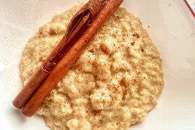

Oatmeal

Mexican Oatmeal
This Mexican oatmeal brings back memories of when my mother made it for us
when we were kids. Made with milk, cinnamon, and vanilla, it’s sweet, creamy, and comforting.
Ingredients
Steps
- Bring water and cinnamon stick to a boil in a saucepan.
- Add oats and cook for 1 minute.
- Add milk and cook until thickened.